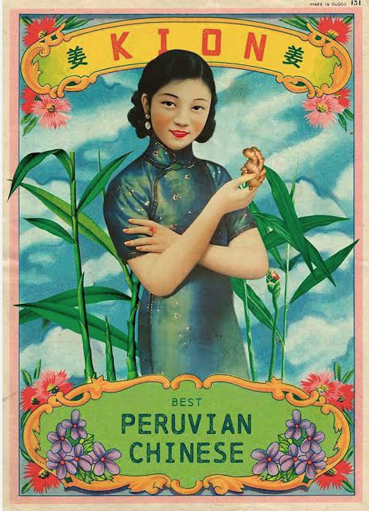

Lomo Saltado is....
A Chinese-Peruvian stir fry dish made with beef filet considered part of Peru's "Chifa" fusion gastronomy. It's one of Peru's primary and most popular dishes both nationally and internationally. Its rich flavor and robust ingredients are sure to quench your most brutal hunger.
Where did it come from?
- Born in Peru in the 1800's
- Originated from Chinese-Peruvian Colonies
- Relatively unknown in US during 1980's
- Achieved worldwide recognition 2000's and beyond
- Available in capital cities across US.
